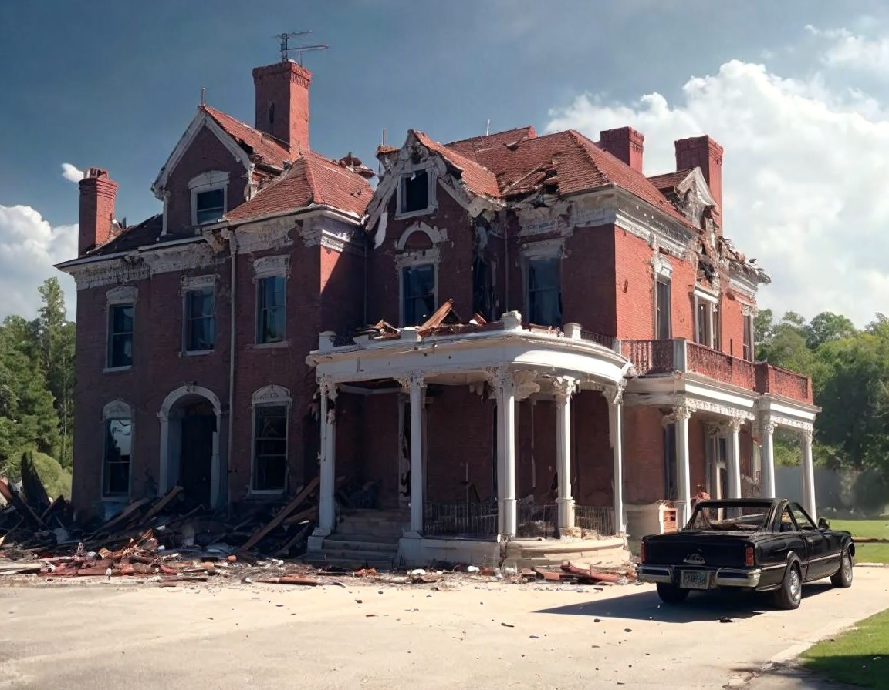

In a faraway kingdom, a young prince named Leon lived a life of luxury, poised to inherit the throne of Verdantia. However, beneath the glittering façade of royal life, Leon felt a profound emptiness. He longed for genuine love, a connection that transcended the superficial nature of the court.
Every day, the grand halls of the castle were filled with noble ladies, all vying for the prince's attention. They wore shimmering gowns and spoke with sweet voices, but Leon could see through their rehearsed lines and practiced smiles. None seemed to care about the real him; they only desired his title and the luxurious life that came with it.
Heartbroken, Leon made a bold decision: he would disguise himself as a commoner and venture into the bustling village beyond the castle walls to find someone who would love him for who he truly was.
One moonlit night, Leon donned a simple cloak, traded his princely attire for worn-out clothes, and slipped away from the castle. He took a deep breath, feeling both exhilarated and nervous as he stepped into the vibrant streets of Verdantia.
As he wandered through the lively marketplace, he marveled at the authenticity of the villagers. They were carefree, filled with joy that seemed to evade him within the confines of the castle. Leon approached a group of children playing with a makeshift ball made of rags and leaves. Joining them, he laughed and kicked the ball, forgetting his royal burdens for a moment.
Days turned into weeks as Leon explored the village under his disguise. He worked at a local bakery, where he learned to knead dough and bake bread. He made friends with the townsfolk, sharing stories and laughter, but still, he felt something was missing.
It was then that he met Elena, a spirited young woman known for her bright smile and kind heart. She had a fiery passion for life, always helping her neighbors and nurturing the community. Leon was drawn to her warmth, and they quickly became friends.
They spent long afternoons together, talking about their dreams and aspirations, and exploring the rolling hills surrounding the village. As time passed, Leon found himself falling for her. Elena, too, seemed to sense a deeper connection, but he hesitated to reveal his true identity, fearing that once she learned he was a prince, she would see him as nothing more than a title.
One afternoon, while walking through a meadow filled with wildflowers, Elena looked at Leon with a serious expression. “You know, there’s something about you that feels different. You carry a weight on your shoulders. What is it?”
Leon’s heart raced. Should he tell her the truth? He took a deep breath and began to share his story. He told her about the pressures of being a prince, the loneliness that came with it, and how he had disguised himself to find someone who would love him for who he truly was.
Elena listened intently, her eyes wide with surprise. “You mean you’re a prince? All this time, you’ve been pretending to be someone else?”
“Yes,” he admitted, his voice low. “I thought I could find someone who loves me, not for my title, but for who I am. But now I fear I’ve lost something precious.”
Elena looked down, contemplating his words. “Leon, I care for you deeply. It doesn’t matter to me what title you hold. You have shown me kindness, laughter, and friendship. I fell in love with the man, not the prince.”
Relief washed over him, and he took her hands in his. “You truly mean that?”
“Of course! You are brave and genuine, and that is what I admire most about you,” she replied, her voice steady.
With newfound courage, Leon kissed her softly, realizing that he had found exactly what he had been searching for—a love that was real and true.
Leon knew he had to return to the castle, not only to ease his father’s worries but to make a decision about his future. He took Elena back to the castle, their hands intertwined, hearts racing.
As they entered the grand hall, the courtiers gasped in disbelief. The king stood up, his face a mixture of anger and relief. “Leon! Where have you been? We feared you were lost!”
“I was lost, Father,” Leon replied, his voice strong. “But I found my way back, and I’ve discovered something far more valuable than riches or titles.”
With that, he stepped aside and introduced Elena to the court. “This is Elena, the woman who has shown me the true meaning of love. I wish to marry her.”
The room fell silent. The king, after a moment of shock, stepped forward. “You wish to marry a commoner? Why, my son?”
Leon looked at his father with determination. “Because she loves me for who I am, not for my crown. She brings me joy and laughter, something I’ve never found in the court. I want to be happy.”
After what felt like an eternity, the king’s stern expression softened. “If she makes you happy, then I will accept her as my daughter-in-law. A true king should always seek happiness, even if it lies outside the bounds of tradition.”
Cheers erupted in the hall as the courtiers welcomed Elena. The royal wedding was a grand celebration, a joyous union of love that brought the kingdom together.
Leon and Elena ruled Verdantia with compassion and understanding, always prioritizing the well-being of their people. They often visited the village, never forgetting the roots of their love.
And so, the prince who had pretended to be a commoner found his true identity in love, and they lived happily ever after, proving that the most important title one could hold is that of being true to oneself.
In the quaint village of Willowdale, nestled between rolling hills and winding streams, two brothers, Edwin and Elliot, lived vastly different lives. Edwin, the elder, was notorious for his parsimony, hoarding every coin and possession.
Elliot, on the other hand, had a heart of gold, always willing to lend a helping hand. Their differing values created tension between them, but their love for each other remained strong.
One fateful day, Elliot approached Edwin with a desperate plea. "Brother, I need your help. Our neighbor, Mrs. Jenkins, faces eviction. Her illness has left her unable to pay rent. Her family will be on the streets if we don't act."
Edwin scoffed, "Not my concern. She should've managed her affairs better. I won't waste my hard-earned wealth on someone else's mistakes."
Elliot persisted, explaining the consequences of inaction, but Edwin refused. That night, a fierce storm ravaged Willowdale, and a fire broke out, spreading rapidly.
The village was engulfed in flames, and Edwin's grand mansion was destroyed, burning his wealth and possessions. He lost everything.
As Edwin wandered the ashes of his home, he stumbled upon Mrs. Jenkins, who had also lost everything. Despite her own struggles, she took Edwin in, sharing her last bread and shelter.
Edwin was taken aback by her kindness. "Why are you helping me? I refused to aid you," he asked.
Mrs. Jenkins smiled. "We're all in this together, Edwin. Your brother Elliot helped us when you wouldn't. Now, it's my turn to help you."
Edwin realized too late that his stinginess had cost him everything: his wealth, his home, and his dignity. He felt the weight of his mistakes.
Elliot found Edwin, broken and destitute. "Brother, I'm sorry," Edwin whispered, tears streaming down his face. "I understand now. My greed destroyed me."
Elliot embraced him. "You're forgiven, brother. Let's rebuild together."
Edwin learned from his mistakes, and the brothers rebuilt their lives, focusing on kindness and generosity. They helped rebuild Willowdale, supporting those affected by the fire.
The village prospered once more, and the brothers' bond grew stronger.
Edwin became known for his compassion, and his story served as a cautionary tale about the dangers of greed.
In the kingdom of Azsar, King Malakai ruled with an iron fist, crushing any dissent. His cruelty and greed knew no bounds, and his subjects lived in constant fear.
Malakai's taxes drained the people's pockets, leaving families with barely enough to survive. He enslaved thousands, forcing them to build grand monuments in his honor.
The king's advisors warned him of the consequences, but Malakai scoffed, "I am the law. None shall question my authority."
Years passed, and Malakai's tyranny intensified:
The people's suffering grew:
A wise old sage, Ariana, prophesied the king's downfall. "Your cruelty will be your undoing, Malakai. The people will rise, and your kingdom will burn."
Malakai laughed, ordering Ariana's execution. But she vanished, leaving behind a cryptic message:
"The fire that fuels your ambition will consume you."
As Malakai's tyranny worsened, the kingdom teetered on collapse:
The people's patience wore thin. A young rebel, Lyra, emerged, rallying the oppressed.
"We will not be silenced! We will not be enslaved!" Lyra declared.
The rebellion gained momentum:
Malakai faced Lyra, his sword trembling with rage.
"You fools," Malakai spat. "You'll never defeat me."
Lyra smiled. "Your own darkness has defeated you, Malakai."
As the rebels overpowered Malakai's guards, the king fled, only to find his escape route blocked by a wall of flames.
The prophecy had come true.
Malakai's kingdom lay in ruins, his people freed from his tyranny:
The people rejoiced, their freedom won.
Asher's world shattered the night his parents were brutally murdered. He was only 12 years old, left alone and adrift in a sea of grief. The pain was suffocating, and Asher's anger grew with each passing day.
He rebelled against authority, seeking solace in a local gang that promised protection and camaraderie. But as he became deeper embroiled in their activities, Asher realized he was losing himself to the darkness.
One fateful night, the gang targeted an innocent family, leaving them battered and broken. Asher was horrified, recognizing the same fear and helplessness he had felt when his parents were taken from him. This was the wake-up call he needed.
With a heavy heart, Asher made the difficult decision to leave the gang. He knew it wouldn't be easy, but he couldn't continue down a path that betrayed everything his parents had taught him.
Asher returned to school, determined to make a change. He met with a guidance counselor, Mrs. Johnson, who introduced him to Emma, a kind-hearted volunteer. Emma listened to Asher's story without judgment, offering words of encouragement and support.
Emma saw beyond Asher's scars, recognizing the good in him. She encouraged him to pursue his dreams, and soon they were inseparable.
Years passed, and Asher graduated from college, became a social worker, and eventually founded a community center to support families affected by violence.
Emma stood by his side, proudly supporting his every step. They married in a beautiful sunset ceremony, surrounded by friends and family.
Their love flourished, and soon they welcomed two adorable children, Ava and Elijah. Asher coached Little League, attended PTA meetings, and cherished every moment with his new family.
One evening, as they sat on the porch, watching the stars, Asher turned to Emma and said, "You saved me from the darkness. You showed me love and light. I'm forever grateful."
Emma's eyes sparkled with tears. "You saved yourself, Asher. I just helped you see the way."
Asher's heart swelled with love and gratitude. He knew he'd found his true home – in Emma's arms, surrounded by their little family.